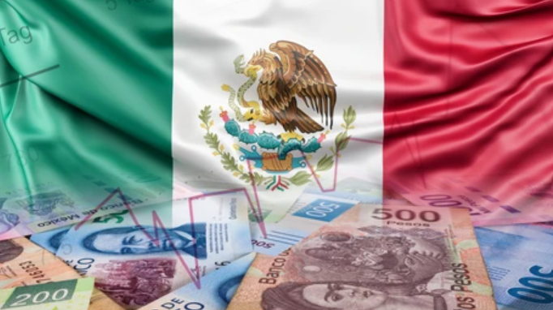

Economia
A economia mexicana é a segunda maior da América Latina e uma economia emergente, diversificada, com forte setor industrial e de serviços. Seus principais pilares são a indústria automotiva, petroquímica e de alimentos, além da exploração de minerais como prata e petróleo. O país se destaca pelo livre comércio, mas enfrenta desafios devido a incertezas sobre políticas comerciais com os Estados Unidos.
Setores econômicos
- Setor secundário (industrial): É altamente desenvolvido e inclui as indústrias automotiva (com fábricas de diversas montadoras), petroquímica (com a presença da Pemex), de alimentos e bebidas (Grupo Modelo e FEMSA), e de materiais de construção.
- Setor terciário (serviços): Representa a maior parte do PIB e emprega a maioria da força de trabalho. O turismo é um setor vital para a economia. Outros serviços importantes incluem comércio, transporte e telecomunicações.
- Setor primário (agrícola e extrativismo): O país é um grande produtor agrícola de frutas (como abacate e manga), milho, cana-de-açúcar e algodão. O México também é um dos maiores produtores de prata do mundo e figura entre os dez maiores produtores de petróleo.
Desafios e oportunidades
- Atração de investimentos: Os parceiros do Acordo Estados Unidos-México-Canadá (USMCA) são os maiores investidores no México, principalmente em manufatura.
- Crescimento populacional: O México tem uma população jovem e urbana, o que garante uma força de trabalho abundante e em expansão, tornando-o atraente para empresas.
- Incertezas comerciais: A economia mexicana enfrenta incertezas relacionadas a possíveis tarifas e barreiras comerciais impostas pelos Estados Unidos, o que pode afetar o crescimento econômico.
- Acordo de livre comércio: O México se beneficia de sua política de livre comércio, participando de acordos como o USMCA e outros que o conectam com mercados importantes.
- Revisão do T-MEC: Em 2026, o México irá revisar o tratado de livre comércio com os EUA e Canadá, um processo que pode trazer desafios.
Voltar para o início